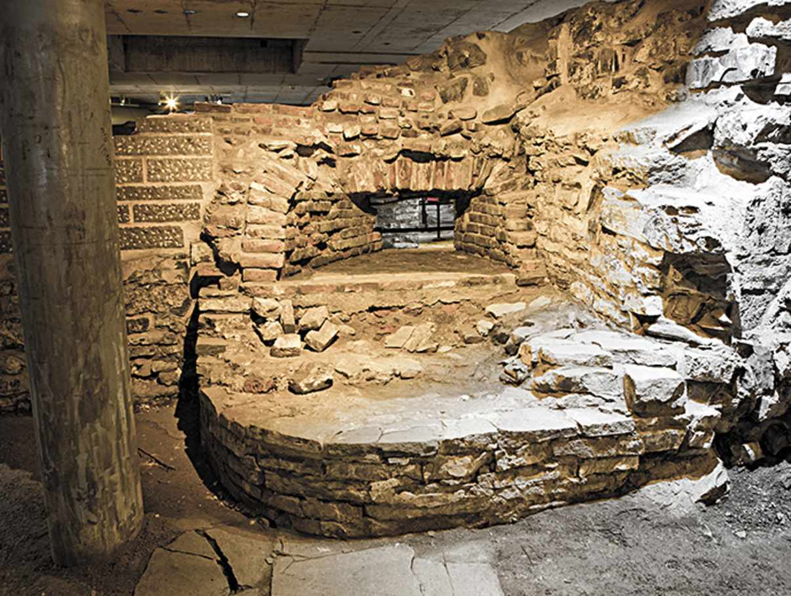
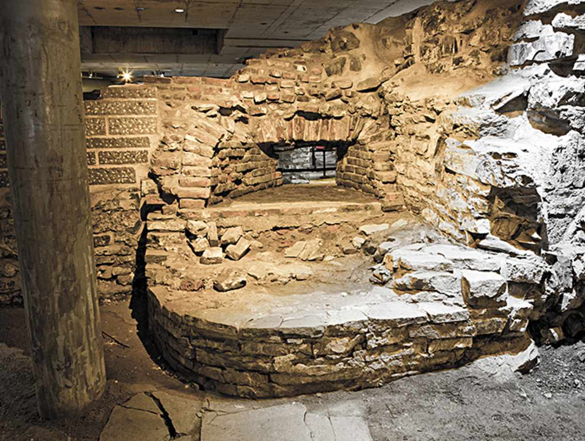
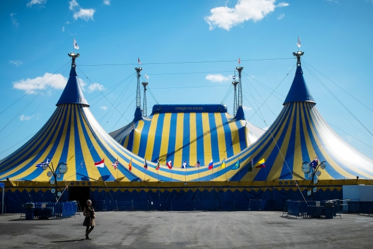

The largest city of Quebec is Montral, Quebec while the capital city of Quebec is Quebec city, Quebec. First, Montreal is the city that has the largest population in Quebec and the 2nd largest metropolitan area in Canada. Montreal is located in the southern portion of Quebec, east of Ottawa. Montreal's current mayor is Denis Coderre. Second, Quebec city is the city that has the second largest population in Quebec and the 7th largest metropolitan area in Canada. Quebec city is located in southern Quebec north of the St. Lawrence river. Quebec city's current mayor is Regis Labeaume. Montreal's tourist attractions include the Montreal Botanical Garden, Montreal Biosphere, and Saint Joseph's Oratory while Quebec city's tourist attractions include Montmorency Falls, Plains of Abraham, and Chateau St. Louis.


 

The professional sports teams in Quebec include the Montreal Canadiens of the National Hockey League (NHL), the Montreal Alouettes of the Canadian Football League (CFL), and the Montreal Impact of Major League Soccer (MLS).
Here are some of the national symbols that help make Quebec a very unique and special place:
| Name | Symbols |
|---|---|
| Flower | Blue flag |
| Bird | Snowy owl |
| Tree | Yellow Birch |
| Motto | Je Me Souviens (I Remember) |

1. Each year, the Hotel de Glace in Quebec is made with 400 tons of ice and over 10,000 tons of snow.
2. Initially, Montreal was the biggest Canadian city, but was exceeded by Toronto in 1970.
3. Montreal, Quebec is where the famous show Cirque du Soleil takes place each year.
4. The second biggest French speaking population in the world is in Montreal, Quebec.
5. Quebec is the province that makes most of the maple syup in Canada.
Look at the inline frame below to see the tourist website of Quebec
Back to home page